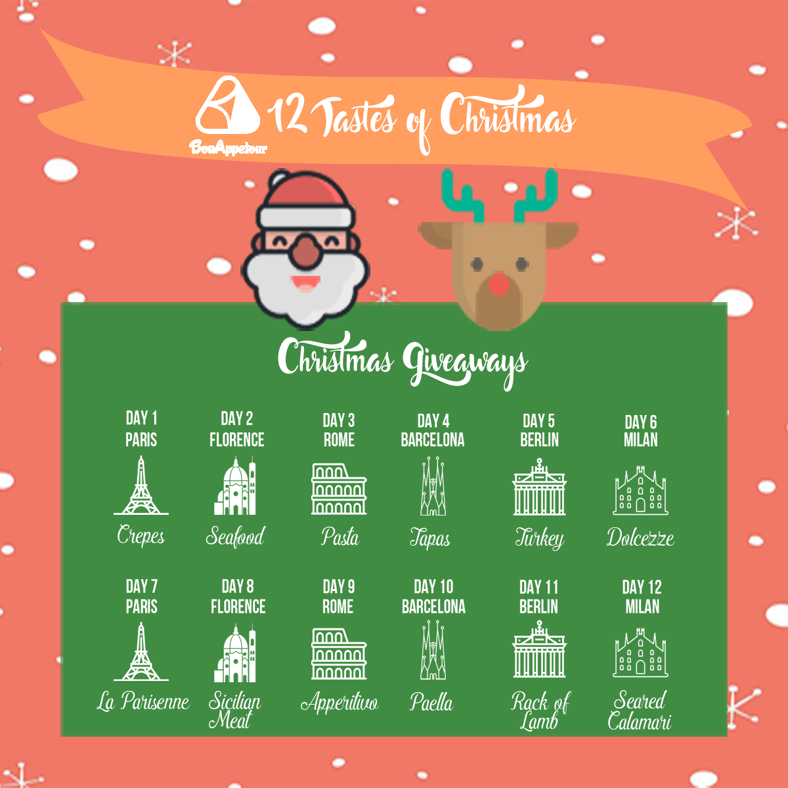
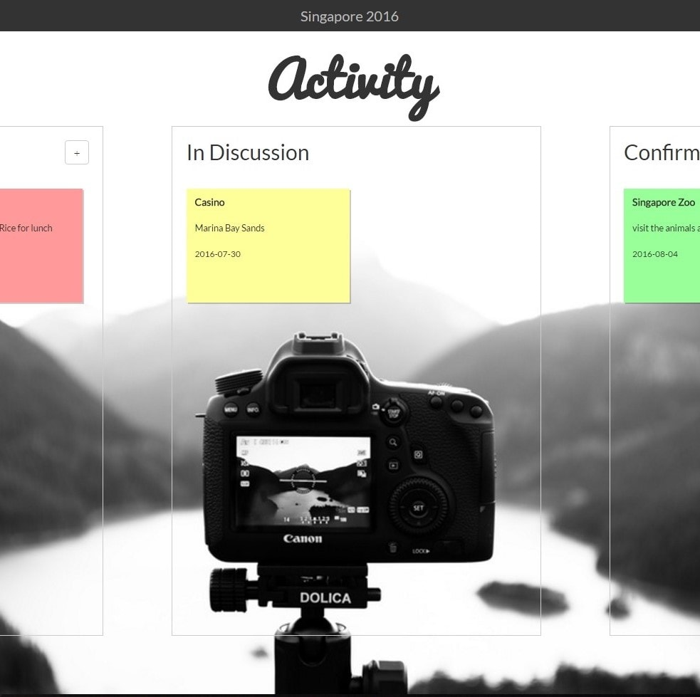
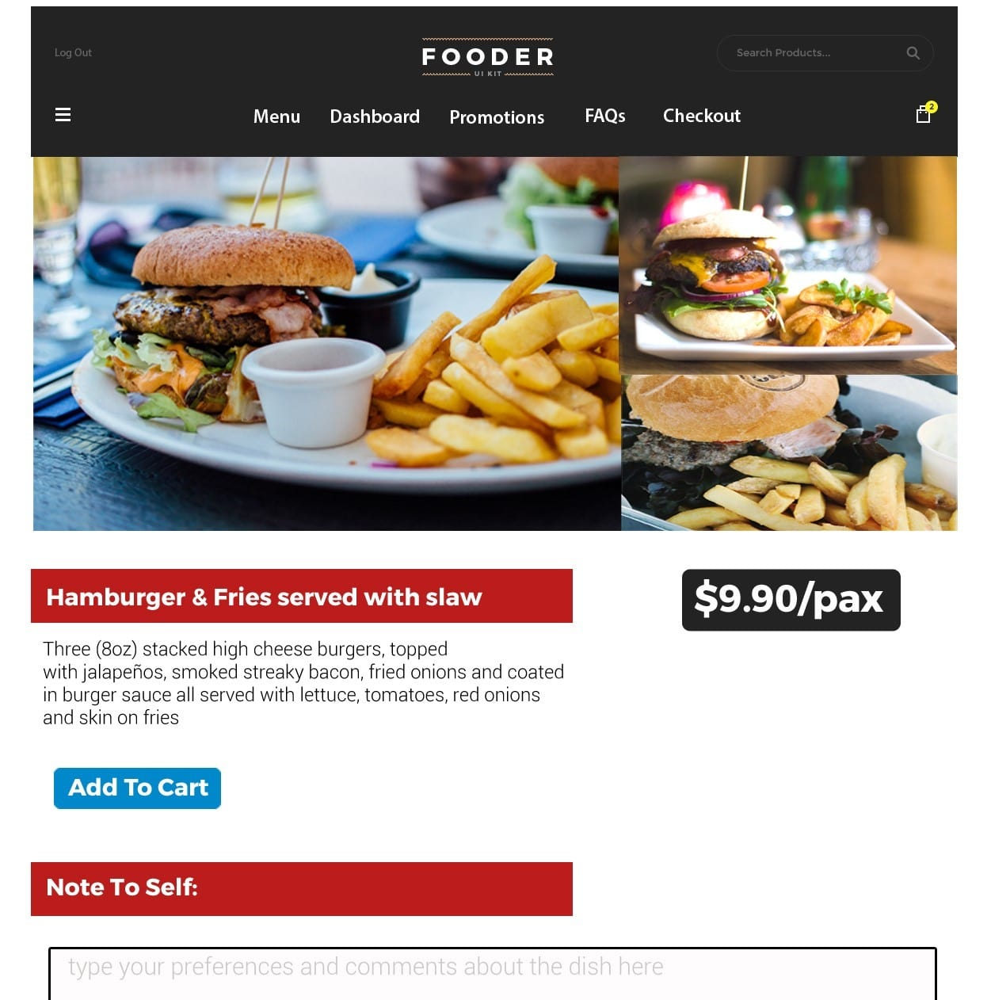
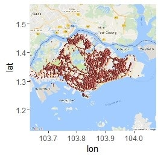

Works

BonAppetour Christmas Marketing Campaign on FB
BonAppetour Christmas Marketing Campaign on FB
BonAppetour FB Ad Image Banner for Rome Shopping Experience
BonAppetour FB Ad Image Banner for Modern Calligraphy Experience

Trip.ie Activity Page

FoodMark Dish Bookmarking Page

Data Plotting of Pulled API Data on RStudio
Projects
NUS Orbital Programme - Trip.ie
Trip.ie (pronounced Trip-py) is a web-application that was co-developed with my project partner as part of the summer-long Orbital Programme in NUS School of Computing.
Trip.ie helps travellers to plan their itenarary. Features of the app includ Kanban board styled To-Do list, Pinterest-like feed of proposed attractions and live collaborative
notepad editor. It was enriching experience because this programme used self-directed learning as the medium of instruction. This programme got me to believe that I could develop anything that I wanted and there was no limit
to my capabilities, even though at the point in time, I had only taken a introductory module in programming methodology (Python).
To view the app, please click
here.

BT1101 Introduction to Business Analytics - Module Project
This was my first foray into handling large datasets for analysis and were introducted to tools like Excel and R. We worked on data from 2004 comScore Disaggregate Dataset from the Wharton Research Data Services. Our objective was
to build models that could effectively and accurately recommend products to customers based on their demographics. We had made used of techniques such as clustering and association rule mining
to build a robust enough model. The challenge faced in this project was in sampling a right size of the data to be used for analysis instead of using the full dataset due to computational and time restraints.
To view the report, please click
here.

BT2101 IT & Decision Making - Module Project
For this project, my group worked on analysing the effects of popular ride-sharing applications in Singapore, such as Uber and Grab, had on the local taxi company ComfortDelgro. We had
to obtain relevant data ourselves and used packages on R to scrape data of Facebook and Twitter for social media analysis where we ran sentiment analysis as well as understanding social media
strategies of ComfortDelgro's competitors. We also pulled live available taxi location data from the Land Transport Authority of Singapore from their API using Python and plotted them as heatmaps. The challenge for this
project was in obtaining relevant data and using our creativity to obtain specific data. For example, as we could not obtain age data from Facebook, we used the Microsoft Project Oxford package on RStudio
to run facial recognition on the display pictures of the followers of the competitors on Twitter. Although this may not be totally accurate, it provided us with additional insights into the customers'
demographics. To view the report, please click
here.
What Others Say I Am
"Mark is a dependable member who always rises to the occasion.
He puts in extra effort into his passions and does his best to help up and beyond his allocated responsibilities."
- Ms Amanda Hsuing, Chairperson Sheares Hall Overseas Community Service Project
"Mark was also an independent worker who required little supervision on tasks assigned to him. He was resourceful and exercised self-initiative."
- Mr Loke Kok Beng, Deputy Superintendent, Singapore Police Force
"I feel that his ability to adapt to new roles and learn new skills fast makes it very easy for us to let Mark take great responsibilities in our startup."
- Ms Inez Wihardjo, COO and Co-Founder of BonAppetour, Ex-Alumni of NOC

{kind=link}
{kind=link}
{kind=link}
{kind=link}
{kind=link}
{kind=link}
{kind=link}
{kind=link}
{kind=link}
{kind=link}
{kind=link}
{kind=link}